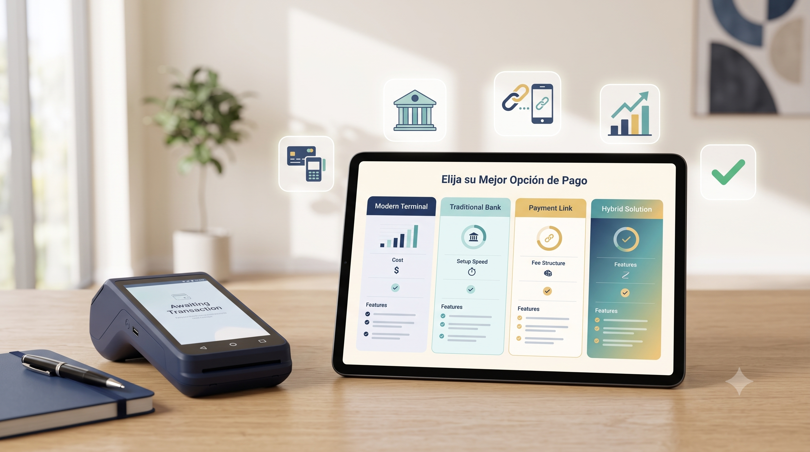

↯
Opciones rápidas de cobro
Para empezar con pocos requisitos, movilidad y disponibilidad rápida. Su comisión suele ser mayor.
Esta guía resume cuándo conviene una terminal moderna, banca tradicional, un modelo híbrido o una solución digital. La mejor decisión depende de tu formalidad fiscal, volumen, liquidez y forma de vender.

Para empezar con pocos requisitos, movilidad y disponibilidad rápida. Su comisión suele ser mayor.
Combinan tecnología moderna con condiciones más formales. Útiles para negocios en crecimiento.
Puede convenir con formalidad fiscal, ventas constantes y búsqueda de tasas negociadas.
Los logos y enlaces llevan a fuentes oficiales para revisar términos y condiciones. Las tasas son referencia informativa y pueden cambiar por promoción, contrato, giro, volumen o fecha.
| Proveedor | Tipo | Tasa o costo publicado / de referencia | Hardware | Requisitos | Liquidación | Qué revisar antes de contratar |
|---|---|---|---|---|---|---|
| Opción rápida de cobro | 3.5% + IVA en ventas al contado con tarjeta, según página oficial consultada. Promoción: 0% en primeros $7,000 para nuevos usuarios Point, sujeta a términos. | Point Smart 2, Point Air, Point Mini y otros modelos. | Requisitos simples; puede iniciar sin RFC ni cuenta bancaria según flujo vigente. | Disponibilidad rápida según cuenta y condiciones. | Promoción vigente, MSI, contracargos, retenciones, disponibilidad de equipo y precio final. | |
| Opción rápida de cobro | Revisar tasa vigente en sitio oficial. Suele operar con comisión por transacción. | Terminales compactas y opciones para negocio. | Activación digital con validaciones de identidad y cuenta. | Según plan y condiciones. | Tasa final, pagos con MSI, depósitos, límites, soporte y promociones. | |
| Opción rápida de cobro | Algunos esquemas se publican alrededor de 3.5% + IVA; verificar plan vigente. | Smart POS y terminales según plan. | INE, CLABE y validaciones básicas o fiscales según producto. | 24 horas o 24/7 según plan. | Tarjetas internacionales, plan contratado, costo del equipo y condiciones de red. | |
| Digital | Puede superar 3.95% + cargo fijo en ciertos casos; verificar tabla oficial. | Sin TPV física obligatoria. | Cuenta validada, identidad y cuenta bancaria. | Retiro según configuración y validaciones. | Comisiones por divisas, retenciones, contracargos y retiros. | |
| Híbrido | Tasa negociable o por evaluación; revisar contrato. | TPV y soluciones digitales según paquete. | RFC, identidad y evaluación comercial. | Según esquema contratado. | Metas de facturación, renta, tasa dinámica y permanencia. | |
| Híbrido | Rango de referencia 2.5% a 3.5%; verificar evaluación y condiciones. | Terminal o solución según producto disponible. | RFC, facturación y evaluación de negocio. | 24 horas o según plan. | Historial, riesgo, volumen, facturación y costo financiero asociado. | |
| Híbrido / recurrente | Variable por contrato. | Enfocado en pagos digitales o recurrentes. | Contrato y modelo de cobranza. | Depende del esquema. | Ganancia mínima, contrato, integración y soporte. | |
| Banca tradicional | Referencias: débito 1.9%, crédito 2.4%, Amex 2.95% aprox.; confirmar. | Renta mensual aproximada según contrato. | RFC, SAT, cuenta y documentación del negocio. | 24 a 48 horas hábiles. | Renta, inscripción, saldo mínimo y penalización por baja facturación. | |
| Banca tradicional | Variable por giro; referencias 2.5% a 6.33% aprox.; confirmar. | Renta según terminal y contrato. | RFC formal y cuenta bancaria. | 24 a 48 horas hábiles. | Facturación mínima, renta, bajo saldo y cargos mínimos. | |
| Banca tradicional | Referencia general 2.15% a 2.50%; confirmar por paquete. | TPV fija o móvil según plan. | Cuenta PyME, cédula fiscal y validación. | 24 horas hábiles aprox. | Cargos por baja facturación, equipos adicionales y condiciones de cuenta. | |
| Banca tradicional | Promedio de referencia 2.5%; confirmar en producto vigente. | iAcepta u opciones TPV según disponibilidad. | RFC formal y cuenta Citibanamex. | 24 horas hábiles aprox. | Afiliación, costos del dispositivo, comisiones y contrato. |
Nota: esta tabla no sustituye la revisión contractual. Antes de decidir, confirma términos vigentes, IVA, comisiones, depósitos, penalizaciones y requisitos directamente con el proveedor.
Artículo compartido por ti sobre el impacto de pagos digitales en MiPyMEs, con referencia a Visa.
Leer artículo DNF / VisaGuía de Billpocket sobre cómo aceptar tarjeta puede ayudar a vender más y reducir fricción al pagar.
Leer artículo BillpocketEstos artículos ayudan a explicar por qué aceptar pagos digitales puede ser valioso, sin prometer resultados iguales para todos los negocios.
Una opción rápida de cobro suele ser más sencilla para iniciar, probar mercado y vender sin trámites pesados.
Un modelo híbrido puede ayudarte a equilibrar facilidad, tecnología y mejores condiciones.
La banca tradicional puede competir mejor en tasa, pero revisa rentas, mínimos y contrato.